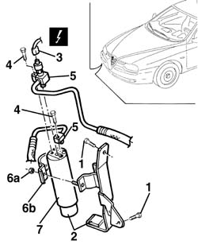
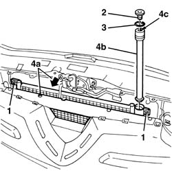

5040A44 air conditioner dehydrating filter/accumulator - r+r
- Path
- Procedures > 50 AUXILIARY UNITS > 5040 AIR CONDITIONING CASING AND COMPONENTS > 5040A air conditioner coolant circuit > 5040A44 air conditioner dehydrating filter/accumulator - r+r
- Kind
- repair procedure (removal / refitting; the operation number is the code)
- Applies to
- all engines; all production periods
- Interactive page
- https://sloeber94.github.io/elrnDB-a156/en/#/3238311
Applies to: all engines; all production periods
Applies to: all engines; all production periods; only with equipment: Air Conditioner
 Removing
Removing
 Refitting
RefittingPlace the vehicle on a lift.
Drain the coolant 5040A10 Air conditioning refrigerant CIRCUIT - Draining and Refilling
1. Raise the vehicle and undo the filter mounting fixing bolts.
2. Release the drier filter, complete with support, from the bodyshell.
3. Disconnect the electrical connection for the multi-stage pressure switch.
 | Name | Connector |
|---|---|---|
3 | 4 stage pressure switch |
4. Undo the bolts fixing the pipe connectors.
5. Disconnect the connectors from the filter.
6. Undo the nut (6a) and open the filter retaining collar (6b).
7. Remove the drier filter.

Applies to: all engines; all production periods; only with equipment: Air Conditioner
Refitting
RemovingCheck that the drier filter is intact and there are no signs of damage.
Follow these precautions.
Reposition the drier filter with the retaining band. and tighten the nut to the recommended torque.
 | Fastening | Component | Ø | Value (daNm) |
|---|---|---|---|---|
- | Nut | Drier filter collar | M6 | 0.4 - 0.8 |
Connect the connectors for the pipes and tighten the fixing bolts to the recommended torque.
| Fastening | Component | Ø | Value (daNm) |
|---|---|---|---|---|
- | Bolt | Drier filter pipes | M6 | 0.9 - 1.2 |
Connect the electrical connection for the multi-stage pressure switch.
Fasten the drier filter, complete with support, to the bodyshell.
Repressurize the coolant 5040A10 Air conditioning refrigerant CIRCUIT - Draining and Refilling
Remove the vehicle from the lift.
Applies to: all engines; production: da 03/02 a 09/03, da 10/03; only with equipment: Air Conditioner
Removing
RefittingDrain the coolant ( 5040A10 Air conditioning refrigerant CIRCUIT - Draining and Refilling ).
7055A43 central front grille - r r .
7055A41 RIGHT FRONT GRILLE - R.R. (right and left).
1. Undo the upper condenser bolts.
2. Undo the plug for the drier filter container.
3. Release the retaining ring.
4. Move the condenser (4a) slightly forwards and extract the drier filter cartridge (4b), tightening a threaded bolt for the tool indicated below or an M12x1.75 screw in the opening (4c).
 | Name | Country |
|---|---|---|
4 | Extractor | 1.842.134.000 |

Applies to: all engines; production: da 03/02 a 09/03, da 10/03; only with equipment: Air Conditioner
Refitting
RemovingCheck that the drier filter cartridge is not damaged.
Move the condenser slightly forwards and fit the drier filter cartridge.
Fit the retaining ring.
Tighten the drier filter container plug.
Tighten the upper condenser bolts.
7055A41 RIGHT FRONT GRILLE - R.R. (right and left)
7055A43 central front grille - r r
Repressurize using coolant fluid ( 5040A10 Air conditioning refrigerant CIRCUIT - Draining and Refilling ).
Topics linked from this page (4)
- 5040A10 Air conditioning refrigerant CIRCUIT - Draining and Refilling
- 7055A41 RIGHT FRONT GRILLE - R.R.
- 7055A43 central front grille - r r
- K10 4 stage pressure switch